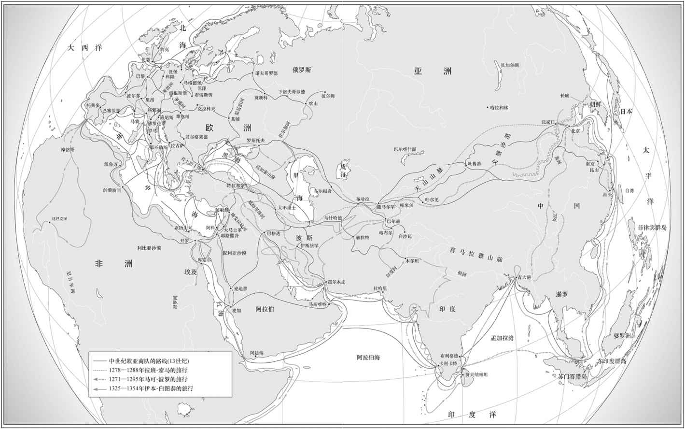

随着蒙古帝国的崛起，欧洲人对世界的认识有了很大的突破。蒙古帝国的存在，使人们的视野从地中海转向欧亚大陆，正如后来哥伦布和达·伽马的航海使人们的视野从欧亚大陆转向全球一样。商人、传教士和战俘的旅行表明，在远东有一个大帝国，它的人口、财富和文明程度，不仅比得上欧洲，而且还超过欧洲。这也不是一个单向的过程，因为东方这时也开始了解西方。马可·波罗既让西方知道了中国，又让中国和中东了解了西方。
马可·波罗的新世界
中世纪欧亚大陆的统一，主要是靠商人，他们在从地中海到中国和东南亚的这一路线上来回旅行。以下摘自马可·波罗游记的若干片段，明确描述了中世纪人们视野的开阔程度。*
至于这一城市（大都，即现代北京）的规模，人们一定知道，它方圆24英里，每一面长6英里……共有12扇城门，每扇城门上都有一个漂亮的大城楼……街道笔直宽阔，你们可以沿着街道从一端看到另一端，也可以从一扇城门看到另一扇城门。整个城市，到处都有美丽的宫殿，还有许多极好的大旅店和大量精美的房屋……
先让我们谈谈载着商人们往返于印度诸小岛之间的［中国］船只。你们一定知道，这些船用杉木制成，只有一个甲板，但却有50个或60个船舱，商人们每人一间，悠闲舒适地待在里面。每艘船只有一个舵，但有四根桅杆，有时船上还有两根额外的桅杆，人们可以很随意地将它们竖起或放倒……每艘大船至少需要200个海员［有的船需要300个］。这些船的确规模巨大，因为每艘能装载5000筐到6000筐胡椒。
日本是东部公海上一个很大的岛屿，距大陆1500英里。岛上的居民皮肤白皙，文明开化，外貌好看。他们崇拜偶像，不依赖于任何人。我还可以告诉你们，他们拥有无数的金子。
如果从印度尼西亚出发，沿南部到东南部之间的航线航行1500英里，你们就会到达一个叫爪哇的大岛。岛上经验丰富、熟悉情况的海员说这是世界上最大的岛屿，方圆3000多英里。它隶属于一个伟大的国王，不向世界上除他以外的任何人纳贡。岛上居民都崇拜偶像。这个岛极其富庶，盛产黑胡椒、肉豆蔻、松香、姜、荜澄茄、丁香和其他各种香料……
当你们离开锡兰岛，向西航行大约60英里时，你们就会到达玛巴省，它被称为印度之都，位于大陆，是印度最富庶的地区……居民都崇拜偶像，很多人崇拜牛［神牛］，因为牛是一种非常优秀的生物。他们从不吃牛肉做成的任何东西，也绝不会屠宰牛。
* H. Yule ed. and trans. The Book of Ser Marco Polo（Scribner's, 1903）, vol. 1, pp. 423-426: vol. 2, pp. 249-250，253-254.

地图12 中期欧亚大陆整体化（约1300年）
众所周知，在此期间，莫斯科、大不里士和诺夫哥罗德都有中国侨商殖民；在美索不达米亚，中国技师应聘从事水利工程建设。有资料记载，中国官僚曾陪同成吉思汗出征视察，从欧亚大陆的一端旅行到另一端。此外，1278年，生于北京的聂斯脱利斯教徒拉班·巴尔·索马曾旅行到伊儿汗国朝廷巴格达，被蒙古人从那里派往欧洲，寻求基督教对其反对伊斯兰教的援助。他于1287年出发，去过君士坦丁堡、那不勒斯、罗马、巴黎和伦敦，途中会见了法王腓力四世和英王爱德华一世。中世纪时期，游历范围最广的旅行家是伊斯兰教徒伊本·白图泰（1304—1377年）。他从自己的家乡摩洛哥出发，去麦加朝圣，然后取道撒马尔罕前往印度，又作为法官和使者从印度被派往中国。回到摩洛哥后，他又继续北上到达西班牙，随后又南下进入非洲内地，到达廷巴克图。到他最后返回摩洛哥定居时，已至少旅行了7.5万英里。
西方世界最重要的旅行家是著名的马可·波罗。当他父亲和叔叔第二次旅行去中国时，他也一同前往，于1275年到达忽必烈的朝廷。他给忽必烈留下了良好的印象，并以各种身份为忽必烈服务了17年，游历了全国各地。作为一个官员，途经之处，他特别注意观察当地的居民和资源，他曾记下这样的东西：“有一种黑石块，像别的石头一样，从山里挖掘出来，但可以像木头一样燃烧。”1292年，他护送一位蒙古公主航行，绕过东南亚，穿过印度洋，前往波斯，同伊儿汗国大汗结婚。到达波斯后，马可·波罗继续西行，于1295年回到了阔别25年的家乡威尼斯。不久，他在与热那亚的战斗中被俘，于狱中口述了他的旅行见闻。
他讲到了带有花园和人造湖的大汗宫廷，装戴银挽具和宝石的大象。他还讲到了一些大道，它们修得高于周围地面，易于排水；在大运河上，商人船只每年川流不息；各个港口，停泊着比欧洲人所知道的还要大的船只；并谈到了生产香料、丝绸、生姜、糖、樟脑、棉花、盐、藏红花、檀香木和瓷器的一些地方。马可·波罗还描写了他护送中国公主到波斯去时，访问和听说过的所有神话式的国度——新加坡、爪哇、苏门答腊、锡兰、印度、索科特拉岛、马达加斯加、阿拉伯半岛、桑给巴尔和阿比西尼亚。
书中的一切仿佛离奇古怪、言过其实，因此，人们给他起了个绰号叫“百万先生”，因为“他开口闭口总是说百万这个、百万那个”。其实，他向16世纪中叶的欧洲人提供了有关中国最为全面可靠的资料。这本书题名为《世界见闻录》并非偶然。实际上，这部著作使西方人对世界的了解范围突然扩大了一倍。马可·波罗就和两个世纪后的哥伦布一样，为同时代人开辟了崭新的天地。的确，正是他所描写的有关中国和香料群岛的迷人景象，召唤着伟大的探险者们，在伊斯兰帝国封锁陆上道路之后，直接寻找一条海上航线，继续前进。
［推荐读物］
论及欧亚大陆内各种相互影响的最重要的著作有J. Needham所著的Science and Civilization in China（Cambridge University出版社，1954）的第一卷: J. H. Bentley所著的Old World Encounters（Oxford University出版社，1993）: J. L. Abu-Lughod所著的Before European Hegemony: The World System, A. D. 1250—1350（Oxford University出版社，1989）。以下著作描述了海上贸易: G. F. Hourani所著的Arab Seafaring in the Indian Ocean in Ancient and Early Medieval Times（Princeton University出版社，1951）: P. D. Curtin所著的Cross-Cultural Trade in World History（Cambridge University出版社，1984）: K. N. Chaudhuri所著的Trade and Civilization in the Indian Ocean（Cambridge University出版社，1985）。Needham著作的第四卷第三编阐述了中国人的航海事业，包括明代的航海活动。以下著作对陆上贸易进行了分析: G. F. Hudson所著的Europe and China: A Survey of Their Relations from the Earliest Times to 1800（Beacon出版社，1961）: P. Yung所著的The Silk Road: Islam's Overland Route to China（Oxford University出版社，1986）。C. G. F. Simkin所著的The Traditional Trade of Asia（Oxford University出版社，1969）对欧亚贸易进行了概括的分析。关于技术交流的基本著作是刚刚列举的Needham的多卷本研究成果。
以下著作论及马可·波罗和其他旅行家的经历：R. E. Latham翻译的The Travels of Marco Polo（Penguin出版社，1958）: L. Olschki所著的Marco Polo's Precursors（Johns Hopkins出版社，1943）: I. de Rachewiltz所著的Papal Envoys to the Great Khans（Stanford University出版社，1971）: R. Dunn所著的The Adventures of Ibn Battuta: A Muslim Traveller of the Fourteenth Century（University of California出版社，1986）一书提供了整个伊斯兰世界的迷人的全景。
［注释］
[1]H. Yule, ed., Cathay and the Way Thither, Hakluyt Society, Series 2, XXXVIII（London, 1914）, pp. 152，154.
[2]Francis Bacon, Novum Organum, Book I, aphorism, p. 129.